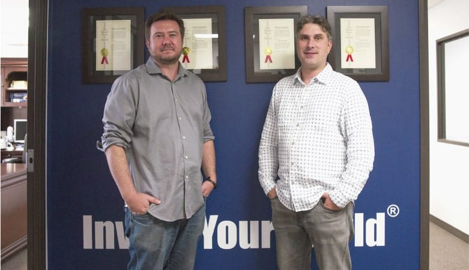

When returning from his leave, Rostóv felt, for the first time, how close was the bond that united him to Denísov and the whole regiment.
On approaching it, Rostóv felt as he had done when approaching his home in Moscow. When he saw the first hussar with the unbuttoned uniform of his regiment, when he recognized red-haired Deméntyev and saw the picket ropes of the roan horses, when Lavrúshka gleefully shouted to his master, “The count has come!” and Denísov, who had been asleep on his bed, ran all disheveled out of the mud hut to embrace him, and the officers collected round to greet the new arrival, Rostóv experienced the same feeling as when his mother, his father, and his sister had embraced him, and tears of joy choked him so that he could not speak. The regiment was also a home, and as unalterably dear and precious as his parents’ house.
This allows your final design to look deliberate, professional, and consistent.
When he had reported himself to the commander of the regiment and had been reassigned to his former squadron, had been on duty and had gone out foraging, when he had again entered into all the little interests of the regiment and felt himself deprived of liberty and bound in one narrow, unchanging frame, he experienced the same sense of peace, of moral support, and the same sense of being at home here in his own place, as he had felt under the parental roof.
H2 Chapter XV
The whole world was divided into two unequal parts: one, our Pávlograd regiment; the other, all the rest. And the rest was no concern of his. In the regiment, everything was definite: who was lieutenant, who captain, who was a good fellow, who a bad one, and most of all, who was a comrade. The canteenkeeper gave one credit, one’s pay came every four months, there was nothing to think out or decide, you had only to do nothing that was considered bad in the Pávlograd regiment and, when given an order, to do what was clearly, distinctly, and definitely ordered—and all would be well.
Having once more entered into the definite conditions of this regimental life, Rostóv felt the joy and relief a tired man feels on lying down to rest. Life in the regiment, during this campaign, was all the pleasanter for him, because, after his loss to Dólokhov (for which, in spite of all his family’s efforts to console him, he could not forgive himself), he had made up his mind to atone for his fault by serving, not as he had done before, but really well, and by being a perfectly first-rate comrade and officer—in a word, a splendid man altogether, a thing which seemed so difficult out in the world, but so possible in the regiment.
H3 How do you measure by baseline?
The officers, as usual, lived in twos and threes in the roofless, half-ruined houses. The seniors tried to collect straw and potatoes and, in general, food for the men. The younger ones occupied themselves as before, some playing cards (there was plenty of money, though there was no food), some with more innocent games, such as quoits and skittles. The general trend of the campaign was rarely spoken of, partly because nothing certain was known about it, partly because there was a vague feeling that in the main it was going badly.
Rostóv lived, as before, with Denísov, and since their furlough they had become more friendly than ever. Denísov never spoke of Rostóv’s family, but by the tender friendship his commander showed him, Rostóv felt that the elder hussar’s luckless love for Natásha played a part in strengthening their friendship. Denísov evidently tried to expose Rostóv to danger as seldom as possible, and after an action greeted his safe return with evident joy. On one of his foraging expeditions, in a deserted and ruined village to which he had come in search of provisions, Rostóv found a family consisting of an old Pole and his daughter with an infant in arms. They were half clad, hungry, too weak to get away on foot and had no means of obtaining a conveyance. Rostóv brought them to his quarters, placed them in his own lodging, and kept them for some weeks while the old man was recovering.
This allows your final design to look deliberate, professional, and consistent.
This allows your final design to look deliberate, professional, and consistent.

This allows your final design to look deliberate, professional, and consistent.
In April, Rostóv was on orderly duty. One morning, between seven and eight, returning after a sleepless night, he sent for embers, changed his rain-soaked underclothes, said his prayers, drank tea, got warm, then tidied up the things on the table and in his own corner, and, his face glowing from exposure to the wind and with nothing on but his shirt, lay down on his back, putting his arms under his head. He was pleasantly considering the probability of being promoted in a few days for his last reconnoitering expedition, and was awaiting Denísov, who had gone out somewhere and with whom he wanted a talk.
H4 Do a couple of Google searches
Nationwide lowest monthly cost 24/7 live assistance
Free translate service if you prefer another language
Free activation
No long-term contact requirement (30-day month-to-month agreement)
30-day Money-Back Guarantee
All systems are loaned free of charge for the term of the subscription
Free shipping with annual subscription
No hidden fees
Prices won't increase unless you add upgrades
Available quarterly, semi-annual and annual subscriptions for instant savings
We want to make one thing clear: everything that we will be writing about in this series has not only been verified by several other web development sites, but also used and implemented by them as well.This is practical advice used by real people at real companies.
Simple Habit by Simple Habit Inc
Be My Eyes by Be my Eyes
Khan Academy by Khan Academy
Old Man's Journey by Broken Rules Interactive Media GmbH
Episode by Procket Gems
You’ll often hear the term baseline grid thrown around in relation to achieving vertical rhythm. A baseline grid allows us to track the vertical distances between type and other objects in a design, and I highly recommend using one to achieve a consistent vertical rhythm. However, remember that native mobile experiences and web browsers measure typography in slightly different ways. This can lead to some confusion for designers and developers depending on the design tools and platform.
Measure everything by the baseline
Measure everything by the line height
Allow web and native environments to do their thing
His life meanwhile continued as before, with the same infatuations and dissipations. He liked to dine and drink well, and though he considered it immoral and humiliating could not resist the temptations of the bachelor circles in which he moved.
H5 Actual Information
In April, Rostóv was on orderly duty. One morning, between seven and eight, returning after a sleepless night, he sent for embers, changed his rain-soaked underclothes, said his prayers, drank tea, got warm, then tidied up the things on the table and in his own corner, and, his face glowing from exposure to the wind and with nothing on but his shirt, lay down on his back, putting his arms under his head. He was pleasantly considering the probability of being promoted in a few days for his last reconnoitering expedition, and was awaiting Denísov, who had gone out somewhere and with whom he wanted a talk.
H6 Awesome Animated
His life meanwhile continued as before, with the same infatuations and dissipations. He liked to dine and drink well, and though he considered it immoral and humiliating could not resist the temptations of the bachelor circles in which he moved.
Nearly two years before this, in 1808, Pierre on returning to Petersburg after visiting his estates had involuntarily found himself in a leading position among the Petersburg Freemasons. He arranged dining and funeral lodge meetings, enrolled new members, and busied himself uniting various lodges and acquiring authentic charters. He gave money for the erection of temples and supplemented as far as he could the collection of alms, in regard to which the majority of members were stingy and irregular. He supported almost singlehanded a poorhouse the order had founded in Petersburg.
H3 Table
Traditional Rental
Ecommerce
3rd Column
If you find what you need in the store, you can grab it right away without having to wait for the time it takes to ship
The time investment is much smaller. You can browse several sites and options within minutes without having to drive from place to place
You can often find products at cheaper prices than you would by visiting the traditional stores because websites don’t require building upkeep, hundreds of sales personnel, etc.
Depending on what it is you intend to buy, you can try the goods on before making your purchase
There is a broader range of products, especially when exploring a particular brand, size, color, feature, etc.
Product presentations come with greater depth and immersive experience (sound, video, detailed descriptions, live Q&A)
Some people take pleasure in browsing and shopping (but not me!)
You can buy from almost any country in the world. There are no borders in the online world (at least not yet).
$700
You can often find products at cheaper prices than you would by visiting the traditional stores because websites don’t require building upkeep, hundreds of sales personnel, etc.
You can read customer reviews
Product presentations come with greater depth and immersive experience (sound, video, detailed descriptions, live Q&A)
$900
An ever-increasing trend, more and more shops will allow for free returns should a product not fit properly or meet the standards they claimed online.
You can read customer reviews
Amid the turmoil of his activities and distractions, however, Pierre at the end of a year began to feel that the more firmly he tried to rest upon it, the more Masonic ground on which he stood gave way under him. At the same time he felt that the deeper the ground sank under him the closer bound he involuntarily became to the order. When he had joined the Freemasons he had experienced the feeling of one who confidently steps onto the smooth surface of a bog. When he put his foot down it sank in. To make quite sure of the firmness of the ground, he put his other foot down and sank deeper still, became stuck in it, and involuntarily waded knee-deep in the bog.
Now I can go online and have four different pairs shipped right to my house (all in the popular styles once reserved for those of average shoe sizes) within 48 hours of me visiting the initial page online. What’s more is that I can try them on, choose one or two pairs, and ship the rest back free of charge!
Now I can go online and have four different pairs shipped right to my house (all in the popular styles once reserved for those of average shoe sizes) within 48 hours of me visiting the initial page online. What’s more is that I can try them on, choose one or two pairs, and ship the rest back free of charge!
He divided the Brothers he knew into four categories. In the first he put those who did not take an active part in the affairs of the lodges or in human affairs, but were exclusively occupied with the mystical science of the order: with questions of the threefold designation of God, the three primordial elements—sulphur, mercury, and salt—or the meaning of the square and all the various figures of the temple of Solomon. Pierre respected this class of Brothers to which the elder ones chiefly belonged, including, Pierre thought, Joseph Alexéevich himself, but he did not share their interests. His heart was not in the mystical aspect of Freemasonry.
If you can make forms easy and pleasurable to use (forms!), then most everything else will be a cinch.
— Heydon Pickering
In the second category Pierre reckoned himself and others like him, seeking and vacillating, who had not yet found in Freemasonry a straight and comprehensible path, but hoped to do so.